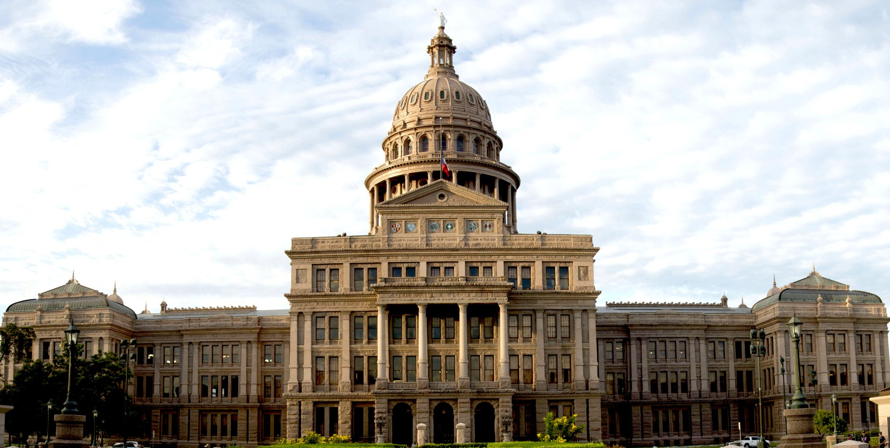

Austin, State Capital of Texas
Location
Austin is the state capital of Texas and the county seat of Travis County. The city is located the Hill Country region of central Texas. It was first settled in 1837 and was originally named "Waterloo". It was renamed "Austin" in 1839 after Stephen F. Austin. Austin and its surrounding cities are classified as urban areas.
Austin and the Arts
Austin is sometimes known as the "Live Music Capital of the World" because of its abundance of live music venues. For over twenty years, Austin has been the site of the popular music festival Austin City Limits, which lasts for two back-to-back weekends in October. The city is also famous for hosting the annual music and film festival South by Southwest (SXSW).